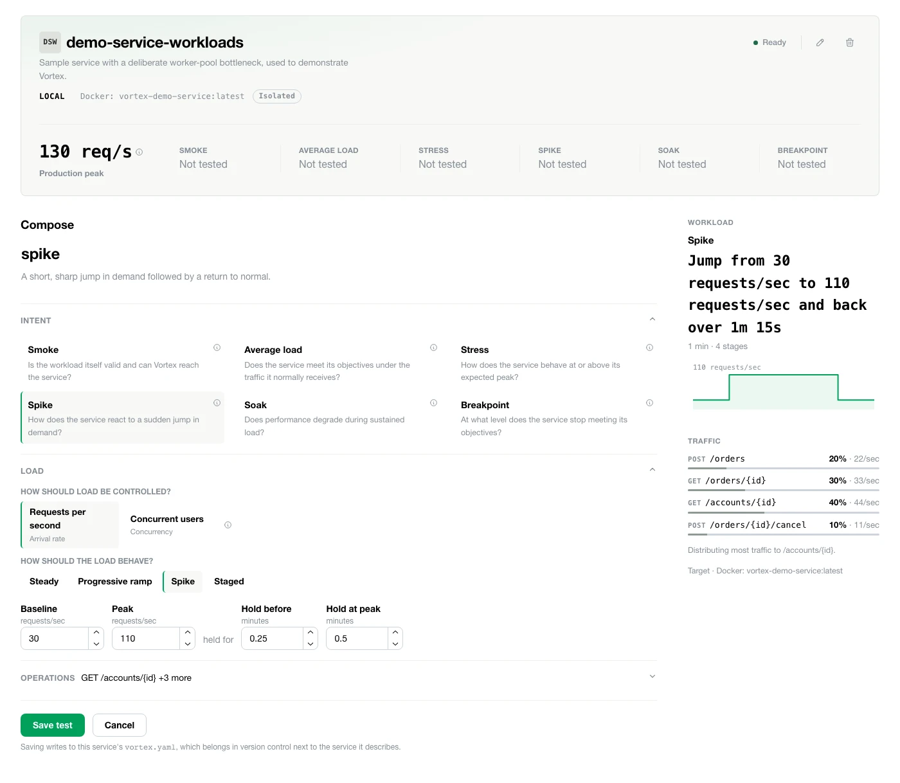
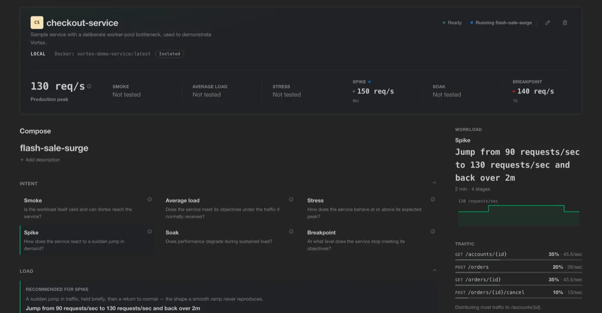
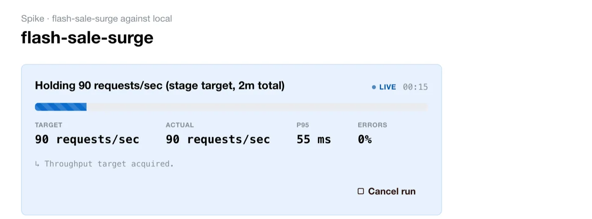
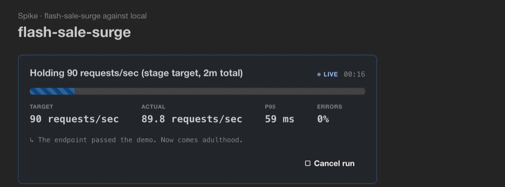
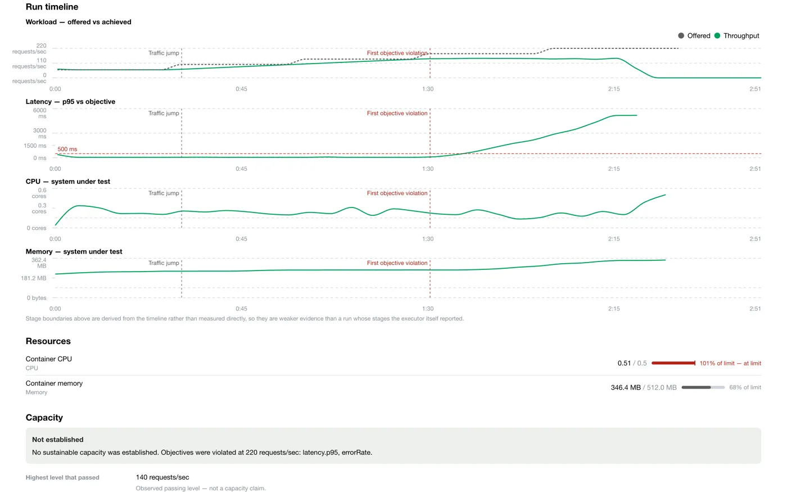
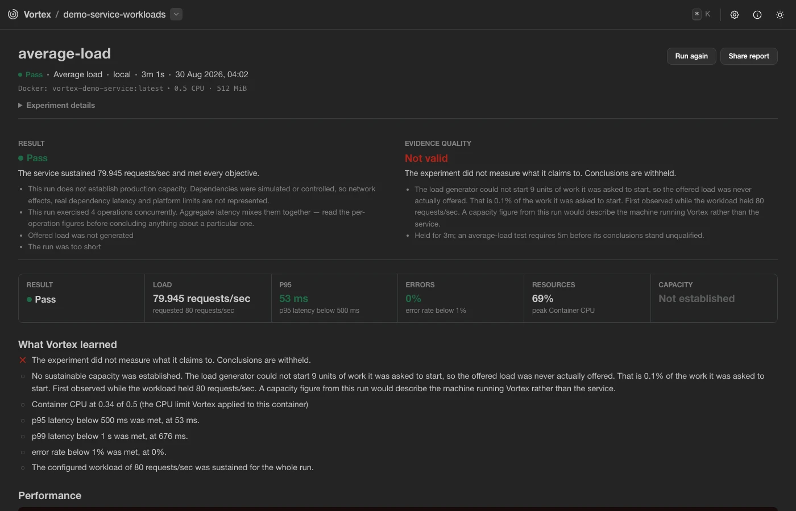

Local-first — runs against your own service, on your own machine.
Vortex brings the workload, objectives, execution, and evidence together so you can answer one question with confidence: can this service actually handle the load you expect of it?
You own a service. Someone asks if it'll hold up under production load. You know roughly how much traffic it sees — but then come the harder questions: what should you actually test, what counts as peak, what response time is acceptable, and for how long. None of those have an obvious answer.
“Can it handle production?” “Probably.” is not capacity evidence.
And a test can run successfully and still give you the wrong conclusion.
The hard part was never running a load test.
It’s knowing what the test is supposed to prove.
Vortex pulls the pieces of a real performance question together, runs the experiment, and hands back what actually happened.
k6 executes the workload. Vortex owns the experiment.
Vortex brings the context around the test together so the result can answer more than whether requests succeeded.
Real Vortex Workbench · Actual local execution
Turn traffic expectations, objectives, operations, and load into an explicit experiment.


Follow throughput, latency, errors, and resources while the experiment runs.


Understand capacity, objective breakpoints, resource limits, and whether the result itself is trustworthy.


Pick the one service you're testing, so everything that follows stays focused on it.
Describe a realistic traffic condition once — version-controlled and reusable, not a throwaway script you'll rewrite next time.
State what you're actually trying to learn: can it hold peak load? Where does it break?
Run it.
Get back a result and the exact conditions that produced it — traceable, comparable, and defensible when you show it to a colleague.
One experiment model. Different places to execute it.
Vortex ships as a single runnable jar. No installer, no account — download it, run it locally.
java -jar vortex.jarShips as a jar today, so Java 25+ is required. A native binary — no JVM needed — is on the roadmap.
Early alpha. Vortex is actively evolving — see GitHub for current capabilities and roadmap.
AI optional. Evidence deterministic. Local AI can help interpret results, but never determines the verdict.